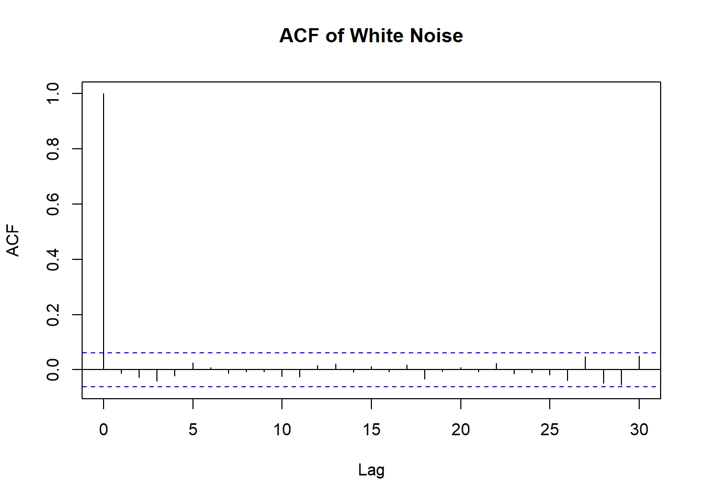
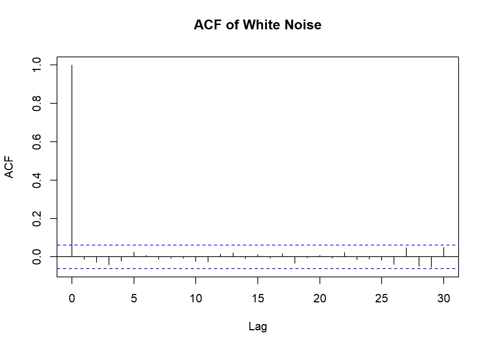
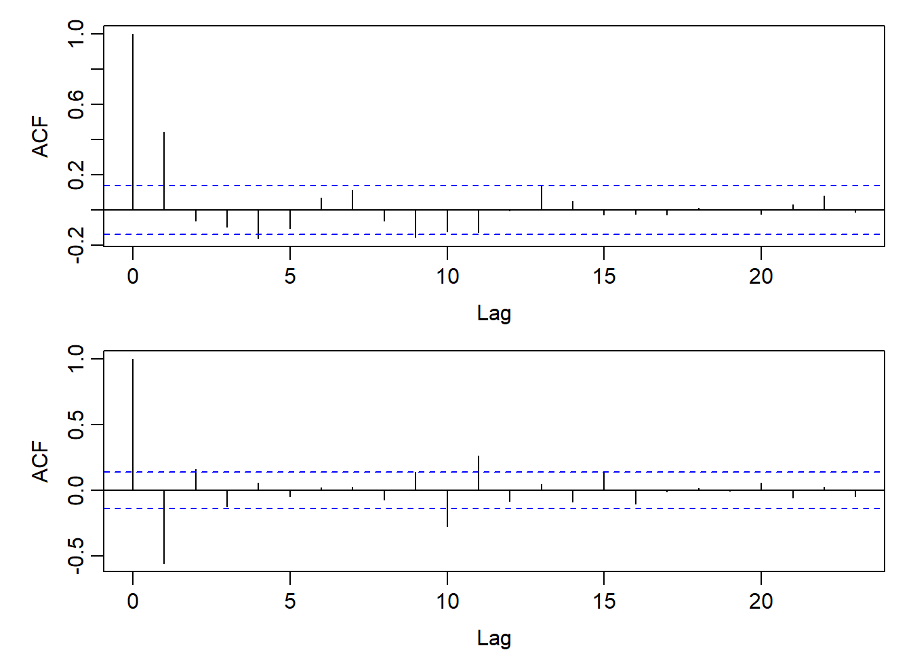
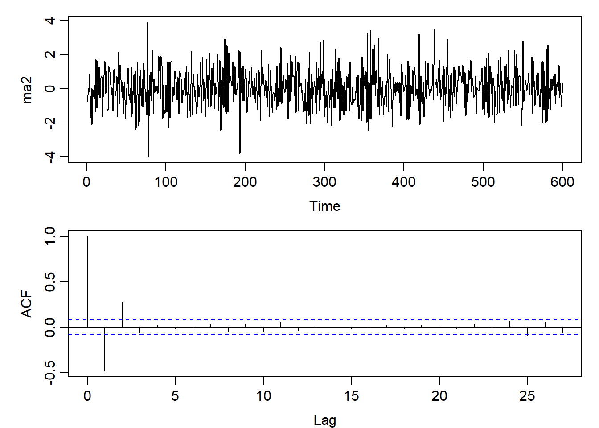

wn <- rnorm(1000, mean = 0, sd = 1)
acf(wn, main = "ACF of White Noise")
A white noise (WN) process is a sequence of uncorrelated random variables with: - Zero mean
- Constant finite variance
- No autocorrelation at nonzero lags
Formally, a process \(\{Z_t\}\) is white noise if: \[ E(Z_t) = 0, \quad Var(Z_t) = \sigma^2, \quad \gamma_Z(k) = Cov(Z_t, Z_{t+k}) = 0 \;\; \text{for all } k \neq 0. \]
or, \[ \{Z_t\} \sim WN(0, \sigma^2) \]
A process \(\{e_t\}\) is purely random if: - \(E(e_t) = 0\) - \(Var(e_t) = \sigma^2 < \infty\) - \(\{e_t\}\) are i.i.d.
Suppose \(\{Z_t\} \sim WN(0,\sigma^2)\).
\[ \gamma_Z(k) = Cov(Z_t, Z_{t-k}) = \begin{cases} \sigma^2, & k=0 \\ 0, & k \neq 0 \end{cases} \]
\[ \rho_Z(k) = \frac{\gamma_Z(k)}{\gamma_Z(0)} = \begin{cases} 1, & k=0 \\ 0, & k \neq 0 \end{cases} \]
wn <- rnorm(1000, mean = 0, sd = 1)
acf(wn, main = "ACF of White Noise")
We can build autocorrelated time series models by taking linear combinations of white noise \(\{Z_t\}\).
A linear process is defined as: \[ X_t = \mu + \sum_{j=0}^\infty \psi_j Z_{t-j}, \]
where: - \(\{Z_t\} \sim WN(0, \sigma^2)\) is white noise, - \(\mu\) is a constant (the mean), - \(\psi_j\) are real coefficients, - the infinite series converges in mean square.
Consider \[ X_t = \mu + \sum_{j=0}^\infty \psi_j Z_{t-j}, \quad \{Z_t\} \sim WN(0,\sigma^2). \]
Since \(E(Z_t)=0\), \[ E(X_t) = \mu \]
Because white noise terms are uncorrelated, \[ Var(X_t) = \sigma^2 \sum_{j=0}^\infty \psi_j^2 \]
This is the square summability condition.
Sometimes we require a stricter condition: \[ \sum_{j=0}^\infty |\psi_j| < \infty \]
Consider \[ X_t = \mu + \sum_{j=0}^\infty \psi_j Z_{t-j}, \quad \{Z_t\} \sim WN(0,\sigma^2). \]
Under the square summability condition \(\sum_{j=0}^\infty \psi_j^2 < \infty\):
\[ \gamma_X(k) = Cov(X_t, X_{t+k}) = E\Big[(X_t-\mu)(X_{t+k}-\mu)\Big] \]
\[ = \sigma^2 \sum_{j=0}^\infty \psi_j \psi_{j-k}, \quad k \in \mathbb{Z} \]
\[ \rho_X(k) = \frac{\gamma_X(k)}{\gamma_X(0)} = \frac{\sum_{j=0}^\infty \psi_j \psi_{j-k}} {\sum_{j=0}^\infty \psi_j^2} \]
The Wold decomposition is a fundamental result in time series theory:
Every zero-mean, weakly stationary time series can be uniquely decomposed as the sum of a deterministic component and a stochastic (linear) component.
Let \(\{X_t\}\) be a zero-mean, weakly stationary process. Then there exists a unique representation:
\[ X_t = \mu + \sum_{j=0}^\infty \psi_j Z_{t-j} + V_t, \]
where: - \(\{Z_t\}\) is a white noise sequence with zero mean and finite variance,
- \(\{\psi_j\}\) are absolutely summable (\(\sum_{j=0}^\infty |\psi_j| < \infty\)),
- \(V_t\) is deterministic and completely predictable from the infinite past
(\(V_t = E(X_t \mid X_{t-1}, X_{t-2}, \dots)\)).
\[ X_t \approx \mu + Z_t + \beta_1 Z_{t-1} + \dots + \beta_q Z_{t-q}, \quad \{Z_t\} \sim WN(0,\sigma^2). \]
This is the MA(q) model, widely used in practice.
Theoretical result:
Every weakly stationary time series can be written as an infinite linear process.
\[
X_t = \mu + \sum_{j=0}^\infty \psi_j Z_{t-j} + V_t
\]
Reality:
We cannot estimate infinitely many parameters.
In practice, we approximate with a finite-order model such as MA(q) or ARMA(p,q).
Long-term prediction:
Finite-order models deviate from the true process as the forecast horizon increases.
Prediction errors accumulate, similar to a “butterfly effect”.
Short-term prediction:
Finite-order models capture the main dependence structure well.
Accuracy is highest when the forecast horizon is short.
Best practice:
Use relatively simple finite-order models.
Update models dynamically (e.g. rolling estimation, re-fitting) to maintain predictive accuracy over time.
A Moving Average model of order \(q\) is: \[ X_t = \mu + Z_t + \beta_1 Z_{t-1} + \dots + \beta_q Z_{t-q}, \quad \{Z_t\} \sim WN(0,\sigma^2) \]
\[ X_t \sim MA(q) \]
Mean \[ E(X_t) = \mu \]
Variance \[ Var(X_t) = \sigma^2 \Big(1 + \beta_1^2 + \dots + \beta_q^2\Big) \]
Autocovariance \[ \gamma_X(k) = \sigma^2 \sum_{j=0}^{q-k} \beta_j \beta_{j+k}, \quad 0 \le k \le q \] and \(\gamma_X(k)=0\) for \(k > q\).
Autocorrelation (ACF) \[ \rho_X(k) = \frac{\gamma_X(k)}{\gamma_X(0)}, \quad 0 \le k \le q \] and \(\rho_X(k)=0\) for \(k > q\).
MA(1): \[ X_t = \mu + Z_t + \beta Z_{t-1} \]
MA(2): \[ X_t = \mu + Z_t + \beta_1 Z_{t-1} + \beta_2 Z_{t-2} \]
where \(\{Z_t\} \sim WN(0,\sigma^2)\).
Autocovariance Function (ACovF): \[ \gamma(k) = \begin{cases} \sigma^2(1+\beta^2), & k=0 \\ \sigma^2\beta, & k=1 \\ 0, & k>1 \\ \gamma(-k), & k<0 \end{cases} \]
Autocorrelation Function (ACF): \[ \rho(k) = \begin{cases} 1, & k=0 \\ \dfrac{\beta}{1+\beta^2}, & k=1 \\ 0, & k>1 \end{cases} \]
We consider the MA(1) model: \[ X_t = \mu + Z_t + \beta Z_{t-1}, \quad \{Z_t\} \sim WN(0, \sigma^2). \]
Where \(\beta = \pm{0.8}\)
set.seed(2287)
ma_p <- arima.sim(model = list(ma = 0.8), n = 200)
ma_n <- arima.sim(model = list(ma = -0.8), n = 200)
par(mfrow=c(2,1), mar=c(3,4,1,1), mgp=c(2,0.6,0))
acf(ma_p)
acf(ma_n)
For the MA(q) process: \[ X_t = \mu + Z_t + \beta_1 Z_{t-1} + \beta_2 Z_{t-2} + \dots + \beta_q Z_{t-q}, \quad \{Z_t\} \sim WN(0,\sigma^2), \]
the covariance with lagged noise terms is:
For $ k=0\(:\ \)$ Cov(X_t, Z_t) = ^2 $$
For \(1 \leq k \leq q\):
\[
Cov(X_t, Z_{t-k}) = \beta_k \sigma^2
\]
For \(k > q\):
\[
Cov(X_t, Z_{t-k}) = 0
\]
\[ \gamma_X(k) = \begin{cases} \sigma^2 \left(1 + \beta_1^2 + \beta_2^2 + \dots + \beta_q^2 \right), & k=0 \\[1em] \sigma^2 \sum_{j=0}^{q-k} \beta_j \beta_{j+k}, & 1 \le k \le q \\[1em] 0, & k > q \\[0.5em] \gamma_X(-k), & k<0 \end{cases} \]
\[ \rho_X(k) = \frac{\gamma_X(k)}{\gamma_X(0)}, \quad k \in \mathbb{Z} \]
ma2 <- arima.sim(model = list(ma = c(-0.5,0.3)), n = 600)
par(mfrow=c(2,1), mar=c(3,4,1,1), mgp=c(2,0.6,0))
ts.plot(ma2)
acf(ma2)
Many time series models can be simplified using a well-known mathematical operator known as the backshift operator.
This is denoted as \(B\). Some authors also call this the lag operator and denote it by \(L\).
The backshift operator \(B\) (or \(L\)) is defined as an operator which shifts a variable back by one time unit. That is:
\[ B X_t = X_{t-1}. \]
It is clear that:
\(B^2 X_t = B(BX_t) = B X_{t-1} = X_{t-2}\)
\(B^3 X_t = B(B^2 X_t) = B X_{t-2} = X_{t-3}\)
In general, \[ B^j X_t = X_{t-j}, \quad j \geq 0 \]
Note: It is clear that
\[ B^0 X_t = X_t, \]
and hence \(B^0\) can be considered as the identity operator, i.e. \(B^0 \equiv I\).
Since \(BZ_t = Z_{t-1}\), we can rewrite the MA(q) model as:
\[ X_t = \mu + (1 + \beta_1 B + \beta_2 B^2 + \cdots + \beta_q B^q) Z_t. \]
Define the MA polynomial (or MA operator) as:
\[ \beta(B) = 1 + \beta_1 B + \beta_2 B^2 + \cdots + \beta_q B^q. \]
Then the compact form of the MA(q) model is:
\[ X_t = \mu + \beta(B) Z_t. \]
The lag-1 differencing of a time series is defined as:
\[ X_t - X_{t-1}. \]
This can be expressed in terms of the backshift operator \(B\):
\[ X_t - X_{t-1} = X_t - B X_t = (1 - B) X_t. \]
The operator \((1 - B)\) can be considered as the differencing operator, denoted by:
\[ \Delta = 1 - B. \]
To apply lag-1 differencing repeatedly \(j\) times, use:
\[ \Delta^j = (1 - B)^j. \]
Recall that an MA(\(q\)) model relates the current observation \(X_t\) with \(Z_t\) together with \(q\) past or historical values \(Z_{t-1}, Z_{t-2}, \dots, Z_{t-q}\) such that:
\[ X_t = Z_t + \beta_1 Z_{t-1} + \beta_2 Z_{t-2} + \cdots + \beta_q Z_{t-q} = \beta(B) Z_t, \tag{*} \]
Under certain regularity conditions, we can rewrite this MA(\(q\)) model in the following equivalent form, representing \(Z_t\) in terms of the observed values \(X_t, X_{t-1}, \dots\):
\[ Z_t = [\beta(B)]^{-1} X_t = \sum_{j=0}^{\infty} \eta_j X_{t-j}, \tag{**} \]
where \(\eta_0 = 1\) and
\[ \sum_{j=0}^{\infty} |\eta_j|^2 < \infty. \]
Theorem:
The MA(1) process given by
\[ X_t = Z_t - \beta Z_{t-1} \]
is invertible if \(|\beta| < 1\).
Using the binomial expansion:
\[ (1 - \beta B)^{-1} = \sum_{j=0}^\infty (\beta B)^j = \sum_{j=0}^\infty \beta^j B^j, \]
we obtain the invertible representation:
\[ Z_t = (1 - \beta B)^{-1} X_t = \sum_{j=0}^\infty \beta^j B^j X_t = \sum_{j=0}^\infty \beta^j X_{t-j}. \]
Suppose that \(\{X_t\}\) is an \(MA(q)\) process satisfying
\[ X_t = \beta(B) Z_t, \quad \{Z_t\} \sim WN(0,\sigma^2), \]
where
\[ \beta(B) = 1 + \beta_1 B + \cdots + \beta_q B^q. \]
We can write \[ Z_t = [\beta(B)]^{-1} X_t. \]
Suppose that the power series expansion for \([\beta(B)]^{-1}\) exists. Then
\[ [\beta(B)]^{-1} = I + a_1 B + a_2 B^2 + \cdots, \] so that
\[ Z_t = \Big(\sum_{j=0}^\infty a_j B^j\Big) X_t = \sum_{j=0}^\infty a_j X_{t-j}, \]
where the coefficients \(\{a_j\}\) are square-summable, i.e.
\[ \sum_{j=0}^\infty a_j^2 < \infty. \]
Consider the MA(\(q\)) process given by
\[ X_t = \beta(B) Z_t, \quad \{Z_t\} \sim WN(0,\sigma^2). \]
If all the roots of the associated algebraic equation
\[ \beta(u) = 0 \]
are outside the unit circle (i.e. \(|u_i| > 1\), for \(i = 1,2,\dots,q\)), then there is a valid invertible solution such that
\[ Z_t = \beta(B)^{-1} X_t = \sum_{j=0}^\infty a_j X_{t-j}, \quad \sum_{j=0}^\infty |a_j|^2 < \infty. \]